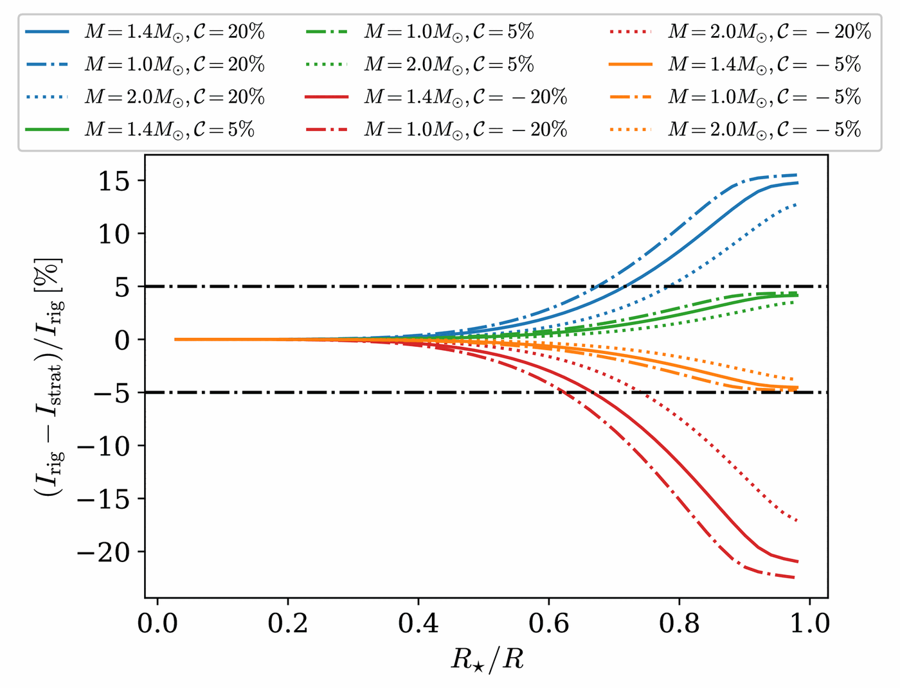

25 November 1915
Einstein and his field equations
 F. Schmutzer · public domain
F. Schmutzer · public domain“Spacetime tells matter how to move; matter tells spacetime how to curve.”
The classical tests
Sobral, 1919: light bends
 ESO / Landessternwarte Heidelberg-Königstuhl / Dyson, Eddington & Davidson · CC BY 4.0
ESO / Landessternwarte Heidelberg-Königstuhl / Dyson, Eddington & Davidson · CC BY 4.0| effect | GR predicts |
|---|---|
| perihelion of Mercury (1915) | 43″ / century |
| light grazing the Sun (1919) | 1.75″ |
| redshift, Pound–Rebka (1959) | 2.5×10⁻¹⁵ over 22.5 m |
| Shapiro delay (1964) | ~200 μs |
| GPS clocks | +38 μs / day |
Sobral expedition (Ceará, Brazil): 1.98 ± 0.12″. Príncipe: 1.61 ± 0.30″. The sky over north-eastern Brazil confirmed Einstein.
December 1915 · Russian front
Schwarzschild and the first exact solution

1 rs
event horizon
1.5 rs
photon sphere
3 rs
ISCO: last stable orbit
2.95 km
rs of the Sun (Earth: 8.9 mm)
He wrote to Einstein on 22 December 1915 while serving as an artillery officer. He died in May 1916.
Event Horizon Telescope · 2019 and 2022
The shadows
 M87* · 2019 · 6.5 billion M☉ · 55 million light-yearsEHT Collaboration · CC BY 4.0
M87* · 2019 · 6.5 billion M☉ · 55 million light-yearsEHT Collaboration · CC BY 4.0 Sgr A* · 2022 · 4.3 million M☉ · 27,000 light-yearsEHT Collaboration · CC BY 4.0
Sgr A* · 2022 · 4.3 million M☉ · 27,000 light-yearsEHT Collaboration · CC BY 4.0The ring is ~5 RS across: it is the photon sphere, at 1.5 RS, seen through the lens of the black hole itself — shadow diameter = 2√27 GM/c² ≈ 5.2 RS.
Neutron stars in numbers
A solar mass in a city
 NASA's Goddard Space Flight Center · public domain
NASA's Goddard Space Flight Center · public domain1.1–2.1 M☉
measured masses
11–13 km
radius (NICER, gravitational waves)
2–3 RS
compactness: the regime of Part I
10⁸–10¹⁵ G
surface magnetic field
Central density a few times that of the atomic nucleus, ~10¹⁵ g/cm³. Spin periods from 1.4 ms to tens of seconds.
Surface gravity is ~10¹¹ times the Earth’s; the escape velocity, 0.5 to 0.7 c.
Cambridge · 28 November 1967
The first pulsar: “LGM-1”
 Roger W Haworth · CC BY-SA 2.0
Roger W Haworth · CC BY-SA 2.0 W. T. Sullivan III / NRAO/AUI · CC BY 4.0
W. T. Sullivan III / NRAO/AUI · CC BY 4.0 Bill Thompson · CC BY-SA 4.0
Bill Thompson · CC BY-SA 4.0Bell noticed a bit of “scruff” that kept coming back on the radio telescope’s paper chart: pulses every 1.337 s, as regular as clockwork. Nickname: LGM-1, for Little Green Men. It was a spinning neutron star.
The surface in X-rays
Why hot spots appear
Millisecond pulsars
Particles accelerated in the magnetosphere flow back and heat the polar caps to ~10⁶ K. They are NICER’s targets.
Magnetars
Field decay and the currents along twisted field lines heat regions of the crust — which change after each outburst.
Isolated cooling stars
The magnetic field makes heat conduction anisotropic: poles hotter than the equator (the “Magnificent Seven”).
 NASA · public domain
NASA · public domain ESA/XMM-Newton · CC BY-SA 3.0 IGO
ESA/XMM-Newton · CC BY-SA 3.0 IGO NASA/CXC/NGST · public domain
NASA/CXC/NGST · public domainNICER · pulse-profile modelling
Mass and radius from the pulse shape
 NASA/GSFC · public domain
NASA/GSFC · public domain| pulsar | mass (M☉) | radius (km) |
|---|---|---|
| PSR J0030+0451 · Riley+ 2019 | 1.34+0.15−0.16 | 12.7+1.1−1.2 |
| PSR J0030+0451 · Miller+ 2019 | 1.44+0.15−0.14 | 13.0+1.2−1.1 |
| PSR J0740+6620 · Riley+ 2021 | 2.07+0.07−0.07 | 12.4+1.3−1.0 |
| PSR J0437−4715 · Choudhury+ 2024 | 1.42 ± 0.04 | 11.4+1.0−0.6 |
NICER time-stamps each photon to ~100 ns. Folding millions of photons at the period gives the pulse profile; ray tracing, with M, R, the geometry and the spots left free, fits that profile by Bayesian inference.
J0030’s spots came out non-antipodal and elongated: the field is not a centred dipole.
de Lima, Coelho, Pereira, Rodrigues & Rueda · ApJ 889, 165 (2020)
SGR J1745−2900: more than two spots


- The magnetar 0.1 pc from Sgr A*; 3.5 years of Chandra data.
- Model: M, R, up to three spots of any size and position, Schwarzschild light bending; fitted with a genetic algorithm.
- Two or three spots describe the data; with three, they are large (16–67°).
- A field with non-trivial poloidal and toroidal structure — the same message NICER gave for J0030.
1.4 ± 0.1
M☉
10.9 ± 1.5
km
de Lima et al. · JHEAp 42, 52 (2024) · 1/2
3XMM J1852+0033: ray tracing and inference

- A transient magnetar near the remnant Kes 79, P = 11.56 s; until then there were only upper limits on the field.
- Five XMM-Newton epochs over three weeks in 2008.
- Ray tracing in Schwarzschild with circular spots of any size (Turolla & Nobili 2013) and magnetised atmospheres (NSMAX: H, C, O), with anisotropic emission.
- Bayesian inference (MCMC): mass, radius, field and spot positions shared by all epochs; size and temperature free to vary.
- Tested by injection and recovery of simulated data.
Best model
Three small spots, two in the southern hemisphere, and a carbon atmosphere: χ²/dof = 1.22, well ahead of two spots or of hydrogen.
de Lima et al. · JHEAp 42, 52 (2024) · 2/2
A massive, low-field magnetar
2.09+0.16−0.09 M☉
mass (1σ): among the highest ever estimated
12.0 ± 1.4 km
radius (2σ)
~8×10¹¹ G
surface field: log B = 11.89+0.19−0.93, below the critical value


Interpretation: accretion of supernova material buried the field, which is now re-emerging; the carbon atmosphere would come from diffusive nuclear burning of H/He.
Compactness GM/Rc² ≈ 0.26: favours equations of state of intermediate stiffness.
Silva, de Lima, Coelho, Stecchini, de Liz & de Araujo · Galaxies 11, 18 (2023)
When the light comes from a column


- In X-ray binaries, matter falls along the field lines and forms columns above the poles: the emission comes out sideways (fan beam).
- Exact ray tracing in Schwarzschild, tabulated, including for points above the surface; Doppler included.
- Genetic algorithm for the priors, then MCMC.
1.53+0.52−0.40
M☉
12.1+1.1−0.9
km
Brans & Dicke 1961 · Damour & Esposito-Farèse 1993
What if gravity is not Einstein’s?
 Cfbolner (Wikimedia Commons) · CC BY-SA 4.0
Cfbolner (Wikimedia Commons) · CC BY-SA 4.0 Melirius (Wikimedia Commons) · CC BY 3.0
Melirius (Wikimedia Commons) · CC BY 3.0In scalar-tensor theories, besides the metric there is a scalar field φ that couples to matter. In the Solar System the effect is tiny; in a neutron star spontaneous scalarisation can occur: the field grows on its own.
Outside the star, the metric is no longer Schwarzschild: it is the Just metric, with a scalar charge Q:
Two stars with the same mass and the same radius — “doppelgängers” — bend light in different ways. The light curve can tell the theories apart.
Ottoni et al. · EPJC 84, 1337 (2024) · results
Up to 80% difference in flux


- The compactness at which ψc = π ranges from 0.275 to 0.305 in scalar-tensor theory, against 0.284 in GR.
- The flux from a spot differs from GR by up to ~80%.
- The radius changes by up to ~10% for the same stellar parameters: today, this limits Q ≲ 0.5.
- With NICER, J0740+6620 has C = 0.21–0.28: not yet enough to separate the theories.
Outlook
Radii with smaller uncertainties — eXTP, NewAthena, and gravitational waves from Einstein Telescope and LISA — may constrain scalar-tensor theories through the pulse shape.
dos Santos Júnior, de Lima & Moraes · arXiv:2607.09836 (2026, submitted)
Compact stars in a braneworld
In the braneworld, our Universe is a membrane in an extra dimension. In the star, this shows up as corrections to the TOV equations:
peff = p + pρλ + ρ²2λ + w𝒰α𝒰ρλ: brane tension · α𝒰, w𝒰: the Weyl sector
MCMC with the NICER radii (J0740+6620, J1231−1411 — themselves ray-tracing results) and GW170817, for the SLy equation of state.

−0.15+0.30−0.08
α𝒰: slightly negative Weyl coupling
104.0 ± 1.5
λ (km⁻²): high tension
2.30+0.14−0.08
Mmax (M☉) · GR+SLy: 2.05
13.3 ± 0.6
R1.4 (km) · GR+SLy: 11.8
Consistent with the data, with no large departures from GR. Preprint, under review.
PRD 110, 103014 (2024) · PRD 112, 083010 (2025)
What goes into M, R and I

Stratified rotation (Pereira, Ottoni, Coelho, Rueda & de Lima): if the interior rotates differently from the crust, the moment of inertia changes — little if the jump is deep (< 40% of the radius), almost as much as Δω if it is near the surface. This affects the rotational energy budget of pulsars and weakens the universal I-Love-Q relations.

Quark stars (Zastrow, Pereira, de Lima & Horvath): a QCD-inspired equation of state, scanned against maximum masses, radii and tidal deformability. The strong interactions must deviate by ≥ 20% from free quarks; a 1.4 M☉ star would be 10.0–12.3 km in radius.


,_1967.jpg){kind=link}